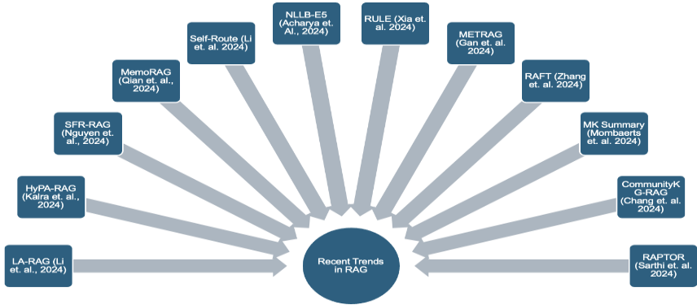
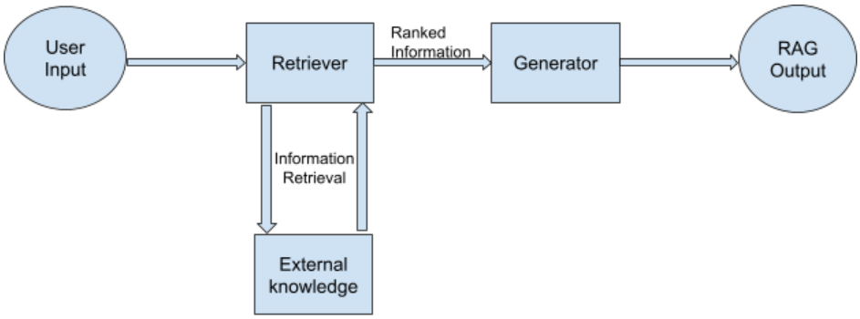
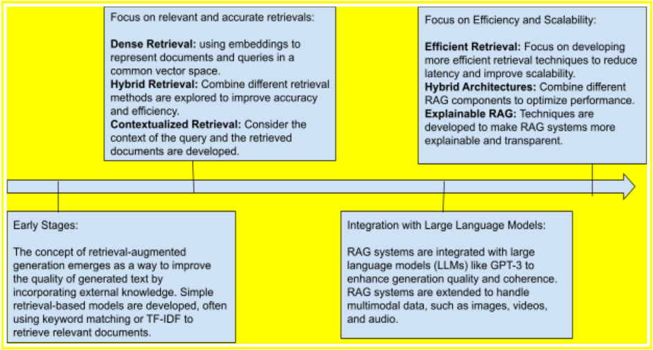
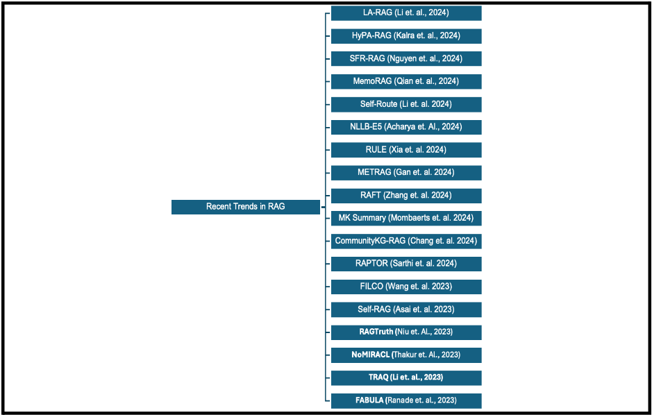

检索增强生成（RAG）综合综述：演进、现状与未来方向
该综述系统梳理了 Retrieval-Augmented Generation（RAG）从早期混合架构到当前最新进展的完整演进脉络，针对 LLM 幻觉与知识静态化问题，说明检索与生成如何协同完成知识密集型任务。方法上，论文按检索器（BM25、DPR、REALM）、生成器（T5、BART）、多模态扩展与近期前沿（Self-RAG、RAFT、FILCO、RAPTOR、MemoRAG、Self-Route 等）组织技术版图，并总结可扩展性、检索质量、偏见、连贯性与可解释性等挑战。关键结论包括：RAPTOR 配合 GPT-4 在 QuALITY 基准上准确率提升 20%；长上下文模型在资源充足时优于 RAG，但 RAG 在成本效率上占优，Self-Route 可通过动态路由平衡两者。对团队而言，这是一份覆盖 RAG 全链路的地图式参考资料，可直接支撑知识库问答与上下文工程的技术选型。
生成式 LLM 依赖静态训练语料，易产生幻觉且无法在不重训的情况下更新知识，难以满足事实准确性要求高的知识密集型任务（如问答、摘要、对话）；同时该领域缺乏一篇充分追踪 RAG 演进与近期变化的综述，本文旨在填补这一空白，系统梳理 RAG 的架构组成、技术进展、当前挑战与未来方向。
综述型方法：以“基础架构—检索机制—生成机制—多模态扩展—近期进展—挑战—未来方向”为主线组织文献。检索侧对比 BM25 稀疏检索、DPR 双编码器稠密检索、REALM 检索与生成联合训练，以及 cross-encoder 重排序与 Learning-to-Rank；生成侧分析 T5、BART 等骨干模型；近期进展覆盖 Self-RAG 反思 token、RAFT 抗干扰文档训练与思维链推理、FILCO 上下文过滤、RAPTOR 递归聚类摘要树、MK Summary 元数据准备、CommunityKG-RAG 知识图谱多跳、MemoRAG 双系统记忆架构、HyPA-RAG 自适应参数检索，以及 Self-Route 在 RAG 与长上下文模型间的动态路由。
本综述为文献综述，作者未开展自身的量化实验
引用结果：RAPTOR 与 GPT-4 配合在 QuALITY 基准上准确率提升 20%
引用结果：RAFT 在 PubMed、HotpotQA、Gorilla 等领域特定 RAG 任务上取得一致性能提升
引用结果：长上下文（LC）模型在资源充足时优于 RAG，但 RAG 成本效率更优，Self-Route 可兼顾性能与计算成本
引用结果：HyPA-RAG 在 NYC Local Law 144 法律文本上展示更高的正确性与上下文精确度
相对已有工作，本文声称填补了“充分追踪 RAG 演进与近期变化”的综述空白：覆盖从 DrQA、REALM 到 2024 年 agentic RAG 与多模态 RAG 的完整时间线，并将检索器/生成器机制、文本/音频/视频/多模态扩展、数据侧准备（元数据、合成 QA、MK Summary）、成本路由（Self-Route）与伦理挑战纳入统一框架，同时给出未来研究方向清单。
相关度级别：high
命中能力域：3.1 上下文工程与记忆 | 3.5 评测与可靠使用
理由：RAG/检索增强是能力域 3.1 明确列出的核心技术，知识库问答也是团队的直接工程场景；综述系统覆盖检索器选型（BM25/DPR/重排序）、上下文质量控制（FILCO）、多粒度知识组织（RAPTOR、MK Summary）与长上下文 vs RAG 的成本权衡（Self-Route），分别对应 3.1 与 3.5（成本与效率、可靠性/幻觉防护）。文中提及的层级多 Agent agentic RAG 框架与 3.4 有弱关联但非论文重点。作为地图式综述，适合作为团队 RAG 链路设计与技术评审的公共参考。
建议动作：深入精读并做内部分享
Shailja Gupta（美国卡内基梅隆大学）Rajesh Ranjan（美国卡内基梅隆大学）Surya Narayan Singh（印度 BIT Sindri）
本文对检索增强生成（RAG）进行了全面研究，追溯了其从基础概念到当前最先进水平的发展历程。RAG 将检索机制与生成式语言模型相结合，以提升输出的准确性，从而解决大语言模型（LLM）的关键局限性。本研究探讨了 RAG 的基本架构，重点关注检索与生成如何集成以处理知识密集型任务。本文详细综述了 RAG 领域的重大技术进展，包括检索增强语言模型方面的关键创新，以及其在问答、摘要和基于知识的任务等多个领域的应用。文中讨论了近期的研究突破，重点介绍了提升检索效率的新型方法。此外，本文还审视了部署过程中存在的可扩展性、偏见和伦理问题等持续性挑战。文章提出了未来的研究方向，重点关注提升 RAG 模型的鲁棒性、拓展 RAG 模型的应用范围，以及应对其社会影响。本综述旨在为研究人员和从业者提供一份基础性资源，帮助其理解 RAG 的潜力及其在自然语言处理（NLP）领域的发展轨迹。

关键词：检索增强生成（RAG）、信息检索、自然语言处理（NLP）、人工智能（AI）、机器学习（ML）、大语言模型（LLM）。
自然语言处理（NLP）已成为人工智能（AI）中的一个关键领域，其应用范围涵盖从简单的文本分类到摘要、机器翻译和问答等更为复杂的任务。自然语言生成（NLG）是 NLP 中一个尤为重要的分支，其重点在于从结构化或非结构化数据中生成类人语言。NLG 的目标是使机器能够生成连贯、相关且具备上下文感知能力的文本，从而改善人与机器之间的交互（Gatt et. al. 2018）。随着 AI 的不断演进，对更具上下文感知能力且有事实依据的生成内容的需求日益增长，这为 NLG 带来了新的挑战与创新。
传统的 NLG 模型，尤其是序列到序列（sequence-to-sequence）架构（Sutskever et al. 2014），在生成流畅且连贯的文本方面已展现出显著进步。然而，这些模型往往严重依赖训练数据，当被要求为需要超出其训练集知识的查询生成事实准确或上下文丰富的内容时，常常表现不佳。因此，诸如 GPT（Radford et al. 2019）或基于 BERT 的（Devlin et al. 2019）文本生成器容易出现幻觉，即生成看似合理但错误或不存在的信息（Ji et al. 2022）。这一局限性促使人们探索将检索机制与生成能力相结合的混合模型，以确保输出兼具流畅性与事实正确性。该领域的研究论文数量显著增长，并且围绕 RAG 的各个组件已提出了多种新方法。除新算法和新方法之外，RAG 还在各种应用中得到了迅速普及。然而，目前尚缺乏能够追踪该领域演变与最新变化的充分综述。本综述旨在填补这一空白。
检索增强生成（Retrieval-Augmented Generation, RAG）是一种新兴的混合架构，旨在解决纯生成式模型的局限性。RAG 集成了两个关键组件：(i) 检索机制，用于从外部知识源中检索相关文档或信息；(ii) 生成模块，用于处理这些信息以生成类人文本（Lewis et al. 2020）。这种组合使 RAG 模型不仅能够生成流畅的文本，还能将其输出建立在真实世界的最新数据之上。
RAG 中的检索模块通常利用稠密向量表示，从大型数据集（如 Wikipedia 或专有数据库）中识别相关文档。文档被检索出来后，会被传递给生成模块（通常采用基于 transformer 的架构构建），以生成基于所检索知识的响应。这种方法有助于缓解幻觉问题，并确保生成的文本更加符合事实、更贴合上下文（Thakur et al. 2021）。在此期间，RAG 模型已在多个领域得到应用，包括开放域问答（Karpukhin et al., 2020）、对话 Agent（Liu et al. 2021）以及个性化推荐。

图 2：RAG 系统及其组件的基本流程
在检索增强生成（RAG）出现之前，自然语言处理（NLP）模型主要依赖检索或生成两种方法之一，每种方法都有其自身的优势与局限。基于检索的系统，例如传统的信息检索引擎（Salton et al., 1975），能够高效地针对查询提供相关文档或片段，但无法综合新信息，也无法以连贯的叙述方式呈现结果。另一方面，随着 Transformer 架构（Vaswani et al. 2017）的兴起而流行起来的纯生成模型则具备流畅性与创造性，但往往缺乏事实准确性。随着研究人员认识到两种方法的互补优势，结合检索与生成的混合系统的研发开始加速推进。混合建模的早期尝试可以追溯到 DrQA（Chen et al. 2017）等工作，其采用检索技术为问答任务获取相关文档。然而，此类系统中的生成组件非常有限，通常仅限于直接从检索到的文档中选取文本。类似地，在诸如 Information Retrieval（Dai et al. 2019）等模型中，检索被视为相互独立的不同组件。真正的创新源于认识到检索与生成可以被紧密集成。诸如 REALM（Guu et al., 2020）等模型代表了一个关键里程碑，因为它们对检索组件与生成组件进行联合训练，使检索到的信息与生成的输出之间能够更好地对齐。RAG（Lewis et al. 2020）进一步扩展了这一范式，其使用稠密段落检索（Karpukhin et al., 2020）来获取相关文档，并使用 BART（Lewis et al., 2020）等 Transformer 模型进行生成。这种架构实现了检索与生成之间更为无缝的集成，使模型能够以兼具流畅性和事实依据的方式回答开放式问题。
开发 RAG 的主要动机之一，是对事实准确、上下文相关且内容最新的生成内容日益增长的需求。在诸如客户服务、医疗诊断或法律咨询系统等许多应用中，对可靠且有事实依据的响应的需求至关重要。产生幻觉信息或不准确信息的生成模型可能导致严重后果，例如传播错误信息或提供错误的建议（Ji et al. 2022）。
RAG 模型通过将其生成过程锚定于外部且最新的知识源，直接应对了上述顾虑。这种锚定（grounding）提高了输出的事实准确性，并通过引入与查询直接相关的真实世界数据来增强响应的相关性。此外，RAG 模型不太可能传播静态训练数据中存在的偏见，因为它们能够从外部来源检索到更加多样且均衡的信息。
RAG 模型已被应用于众多对事实准确性和上下文理解要求极高的领域。其中最突出的应用之一是开放域问答，在这类任务中，模型必须基于广泛的主题生成答案。RAG 已被证明能够通过检索相关信息，再基于这些数据生成回答，从而有效提高答案的准确性（Izacard et. al. 2021）。诸如 Dense Passage Retrieval（DPR）（Karpukhin et al., 2020）和 Fusion-in-Decoder（Izacard et. al. 2021）之类的模型在此类场景中得到了卓有成效的应用，相比传统的生成式模型或仅检索式模型展现出显著提升。在对话式 AI 领域，RAG 模型通过确保回复既连贯又有事实依据，增强了对话系统的能力（Roller et al., 2020）。例如，用于客户服务的聊天机器人可以受益于 RAG 从产品数据库或文档中检索特定细节的能力，从而为最终用户提供更准确、更有用的回复。其他应用还包括医疗诊断系统，RAG 可以在其中检索并整合最新研究成果或患者特定数据，以生成准确的诊断建议；以及法律咨询系统，模型可以在其中检索相关判例法或法规，以提供在法律上可靠的建议。此外，RAG 还在个性化推荐系统中得到了应用，它可以在其中检索
用户偏好或过往交互记录，并生成个性化建议。
本文旨在对检索增强生成（RAG）模型进行全面综述，内容涵盖其演进历程、关键架构组件、该领域的最新研究进展、RAG 当前面临的挑战与局限性，以及未来的研究方向。
检索增强生成（RAG）是一种先进的混合模型架构，它通过外部检索机制来增强自然语言生成（NLG），从而扩充模型的知识库。传统的大语言模型（LLMs），如 GPT-3 和 BERT，在海量语料库上进行预训练，完全依赖其内部的知识表示，因此容易出现幻觉等问题——即模型生成看似合理但实际错误的信息。这些模型若不进行重新训练，便无法高效地更新其知识库，这使得它们在开放域问答和事实核查等动态的、知识密集型任务中实用性较低（Brown, T., et al. 2020）。为了克服这些局限性，论文（Lewis et al. 2020）提出了 RAG 架构，该架构通过实时检索相关的外部文档，使生成的文本立足于事实信息。
RAG 模型包含两个关键组件：
RAG 的优势在于其能够动态利用外部知识，使其优于依赖静态数据集的生成式模型（如 GPT-3）和基于知识的系统（如 BERT）。在开放域问答中，RAG 已被证明非常有效，能够持续检索相关信息并提高生成回答的事实准确性（Guu, K., et al. 2020）。除了知识检索之外，RAG 模型在更新知识库方面也表现出色。由于模型会为每个查询获取外部文档，因此无需重新训练即可纳入最新信息。这种灵活性使 RAG 模型特别适用于信息不断演变的领域，例如医学研究、财经新闻和法律诉讼。此外，研究表明，RAG 模型在多种知识密集型任务中取得了优异的结果，包括文档摘要以及基于知识的对话
RAG 系统中的检索器对于从外部语料库中获取相关文档至关重要。有效的检索能够确保模型的输出建立在准确的信息基础之上。目前常用的检索机制有多种，从 BM25 等传统方法到稠密段落检索（Dense Passage Retrieval, DPR）等更为复杂的技术。
BM25 是一种成熟的信息检索算法，它使用词频-逆文档频率（TF-IDF）根据相关性对文档进行排序。尽管是一种经典方法，BM25 仍然是许多现代检索系统（包括 RAG 模型中使用的检索系统）的强大基线。BM25 根据查询词在文档中出现的频率来计算文档的相关性得分，同时针对文档长度以及该词在整个语料库中的出现频率进行调整（Robertson et. al. 2009）。虽然 BM25 在关键词匹配方面很有效，但它在理解语义方面存在局限。例如，BM25 无法捕捉词与词之间的关系，在需要理解上下文的更复杂的自然语言查询上往往表现不佳。尽管存在这一局限，BM25 因其简单性和高效性仍被广泛使用。BM25 对于涉及较简单的、基于关键词的查询的任务是有效的，不过像 DPR 这样更现代的检索模型在语义复杂的任务中往往优于它。
稠密段落检索（Dense Passage Retrieval, DPR）由 Karpukhin 等人（2020）提出，代表了一种更现代的信息检索方法。它使用一种稠密向量空间，其中查询和文档都被编码为高维向量。DPR 采用双编码器（bi-encoder）架构，查询和文档分别进行编码，从而支持高效的最近邻搜索（Xiong et. al. 2020）。与 BM25 不同，DPR 擅长捕捉查询与文档之间的语义相似性，这使其在开放域问答任务中非常有效。DPR 的优势在于它能够基于语义而非关键词匹配来检索相关信息。通过在大型问答对语料库上训练检索器，DPR 能够找到与查询在上下文上相关的文档，即使查询与文档之间并不包含完全相同的词项。最近的研究通过将 DPR 与预训练语言模型相结合，进一步改进了 DPR，其中一个例子是为稠密 RetrievAl 方法适配的大语言模型（LLM）（Li et. al. 2023）
RAG 模型检索机制的另一项重要进展是检索增强语言模型（REALM）（Guu et al. (2020)）。REALM 将检索集成到语言模型的预训练过程中，确保检索器与生成器一同针对下游任务进行优化。REALM 的关键创新在于，它学习检索能够提升模型在特定任务（如问答或文档摘要）上性能的文档。在训练过程中，REALM 同时更新检索器和生成器，确保检索过程针对生成任务进行优化。REALM 的检索器经过训练，能够识别不仅与查询相关、而且有助于生成准确且连贯回答的文档。因此，REALM 显著提升了生成回答的质量，尤其是在需要外部知识的任务中。最近的研究表明，在某些知识密集型任务中，REALM 的表现优于 BM25 和 DPR，尤其是在检索与生成紧密耦合的情况下。
RAG 的核心在于检索段落的质量，但许多现有方法依赖于基于相似度的检索（Mallen et al. 2022）。Self-RAG（Asai et al. 2023b）和 REPLUG（Shi et al., 2023）通过利用 LLM 来增强检索能力，实现了更具自适应性的检索。在初始检索之后，使用交叉编码器（cross-encoder）模型对检索结果进行重排序，其方式是将查询与每个检索到的文档联合编码以计算相关性分数。这些模型以更高的计算开销为代价，提供了更具上下文感知能力的检索。逐点排序（Pointwise）与逐对排序（Pairwise）通常基于学习排序（Learning-to-Rank, LTR）算法，用于为检索到的文档分配相关性分数，既可以独立进行（逐点），也可以通过比较文档对进行（逐对）。RAG 系统利用 LLM 内部的自注意力（self-attention）机制来管理输入文本与检索文本各部分之间的上下文与相关性。在将检索到的信息整合到生成模型中时，则采用交叉注意力（cross-attention）机制，以确保在生成过程中突出最相关的信息片段。
在检索增强生成（Retrieval-Augmented Generation, RAG）系统中，生成器机制通过将检索到的信息与输入查询相整合，在产生最终输出方面发挥着至关重要的作用。在检索组件从外部来源提取相关知识之后，生成器将这些信息合成为连贯且符合上下文的响应。大语言模型（Large Language Model, LLM）作为生成器的骨干，确保生成的文本流畅、准确，并与原始查询保持一致。
T5（Text-to-Text Transfer Transformer）（Raffel et al. 2020）是 RAG 系统中用于生成任务的最常用模型之一。T5 的处理方式十分灵活多样，它将每个自然语言处理（NLP）任务都构建为文本到文本（text-to-text）任务。这一统一的框架使 T5 能够针对广泛的任务进行微调，包括问答、摘要和对话生成。通过将检索与生成相结合，基于 T5 的 RAG 模型已被证明在包括 Natural Questions 数据集和 TriviaQA 数据集在内的多个基准测试（benchmark）上优于 GPT-3 和 BART 等传统生成模型。此外，T5 处理复杂多任务学习的能力使其成为需要应对多样化知识密集型任务的 RAG 系统的热门选择。
BART（Bidirectional and Auto-Regressive Transformer，双向自回归Transformer）由 Lewis 等人（2020）提出，是 RAG 系统中使用的另一种重要的生成模型。BART 特别适合处理从含噪输入生成文本的任务，例如摘要生成和开放域问答。作为一种去噪自编码器（denoising autoencoder），BART 能够重建受损的文本序列，这使其在需要从不完整或含噪数据生成连贯且符合事实的输出的任务中具有较强的鲁棒性。研究表明，当 BART 与 RAG 系统中的检索器（retriever）配对使用时，能够通过将生成文本锚定于外部知识来提高其事实准确性。已有研究证明，基于 BART 的 RAG 模型在包括对话生成和新闻摘要在内的多种知识密集型任务中取得了最先进（state-of-the-art）的结果。
3.1 基于文本的 RAG 模型：基于文本的 RAG 模型是最成熟、研究最为广泛的一类。这些模型利用文本数据来执行检索和生成任务，支持问答、摘要生成和对话式 Agent 等应用。Transformer 架构，例如 BERT (Devlin et al., 2019) 和 T5 (Raffel et al., 2020)，是基于文本的 RAG 模型的基础。这些模型利用自注意力机制来捕捉文本内部的上下文关系，从而同时提升检索准确率和生成流畅度。稠密检索模型（例如使用来自 BERT 的稠密嵌入的模型）相比 TF-IDF 等传统稀疏方法具有更优的性能。稠密检索器 (Karpukhin et al. 2020) 利用稠密表示来更有效地检索相关文档。近期的研究进展聚焦于将检索与生成整合到单一的训练流水线中。REALM (Guu et al., 2020) 便是此类端到端模型的一个实例，它对检索与生成过程进行联合优化，从而提升了整体任务性能。
3.2 基于音频的 RAG 模型：基于音频的 RAG 模型将检索增强生成（RAG）的原理扩展到音频模态，使语音识别、音频摘要以及语音接口中的对话式 Agent 等应用成为可能。音频数据通常使用由 Wav2Vec 2.0 (Baevski et al., 2020) 等预训练模型导出的嵌入来表示。这些嵌入作为检索和生成组件的输入，使模型能够有效地处理音频数据。
3.3 基于视频的 RAG 模型：基于视频的 RAG 模型同时纳入视觉与文本信息，以提升视频理解、描述生成和检索等任务的性能。视频数据使用来自 I3D (Xie et. al. 2017) 或 TimeSformer (Bertasius et al. 2021) 等模型的嵌入来表示。这些嵌入捕捉了对有效检索和生成至关重要的时序特征与空间特征。
3.4 多模态 RAG 模型：多模态 RAG 模型整合来自多种模态——文本、音频、视频和图像——的数据，为检索和生成任务提供一种更为整体化的方法。Flamingo (Alayrac et al., 2022) 等模型将多种模态整合到统一框架中，能够同时处理文本、图像和视频。跨模态检索技术涉及在不同模态之间检索相关信息 (Li. et. al. 2023)。
多模态能力增强了 RAG 在各类应用中的通用性与效率。“检索即生成”（Retrieval as generation）（Wang et. al. 2024）通过引入文本到图像和图像到文本的检索，将检索增强生成（RAG）框架扩展至多模态应用。该系统利用大规模的图像与文本描述配对数据集，当用户查询与所存储的文本描述相匹配时，即可加速图像生成（“检索即生成”）。其图像到文本功能允许用户基于输入的图像展开讨论。


RAG的这一进展进一步证明了RAG系统的实用性，然而近期发布的支持长期上下文的大语言模型（LLM）已显著展现出性能的提升。近期一项研究（Li et. al. 2024）比较了检索增强生成（RAG）与长上下文（LC）大语言模型（LLM）（例如Gemini-1.5和GPT-4）的效率。在资源充足的情况下，LC模型的表现优于RAG，但RAG的成本效率仍具有优势。为了平衡性能与成本，该论文提出了Self-Route。该方法基于模型自我反思（self-reflection）动态地将查询导向RAG或LC，从而同时优化计算成本与性能。该研究为RAG与LC在处理长上下文任务时的最优应用提供了宝贵的见解。Nguyen et. al.（2024）提出了SFR-RAG，这是一个小型但高效的检索增强生成（RAG）模型，旨在增强外部上下文信息向大语言模型（LLM）的集成，同时最大限度地减少幻觉。LA-RAG（Li et. al., 2024）是一种新颖的检索增强生成（RAG）范式，旨在增强大语言模型（LLM）中的自动语音识别（ASR）。LA-RAG的一个关键优势在于其能够利用细粒度的token级语音数据存储，并结合语音到语音的检索机制，从而提升ASR
本节旨在结合检索增强生成（RAG）系统的当前发展现状，重点阐述其目前面临的挑战与局限性，而这些也将塑造该领域未来的研究方向。
可扩展性与效率：RAG 模型面临的首要挑战之一是可扩展性。由于检索组件依赖外部数据库，处理庞大且动态增长的数据集需要高效的检索算法。此外，高昂的计算成本和内存需求也使得 RAG 模型难以部署在实时或资源受限的环境中 (Shi et al. 2023), (Asai et al. 2023b)。
检索质量与相关性：确保检索到的文档的质量与相关性仍然是一个重要问题。检索模型有时会返回不相关或过时的信息，从而对生成输出的准确性造成负面影响。提高检索精度，尤其是在长篇内容生成场景下的检索精度，仍然是一个活跃的研究领域 (Mallen et al. 2022), (Shi et al. 2023)。
偏见与公平性：与其他机器学习模型类似，RAG 系统可能因检索数据集中存在的偏见而表现出偏见。基于检索的模型可能会放大检索知识中的有害偏见，导致生成结果中出现偏见。为检索和生成协同开发偏见缓解技术是一项持续的挑战。
连贯性：RAG 模型常常难以将检索到的知识整合成连贯且符合上下文的文本。检索段落与生成模型输出之间的对齐并不总是无缝的，从而导致最终回答中出现不一致或事实性幻觉 (Ji et al. 2022)。
可解释性与透明度：与许多 AI 系统一样，RAG 模型常被视为黑盒，其检索如何影响生成的透明度有限。提高这些模型的可解释性对于建立信任至关重要，尤其是在关键应用中 (Roller et al. 2020)。
检索增强生成（RAG）通过将检索机制与生成机制相结合，代表了自然语言处理及相关领域的一项重大进展。本节探讨未来研究的关键领域，重点突出 RAG 系统在创新与改进方面的潜力。
6.1 增强多模态整合：在 RAG 模型中整合文本、图像、音频和视频数据仍然是一项不断演进的挑战。未来研究应聚焦于改进多模态融合技术，以实现不同数据类型之间的无缝交互，这包括开发用于跨模态信息对齐与合成的先进方法。近期工作 (Chen et. al. 2022)、(Yasunaga et. al. 2022)、(Zhu et. al. 2024) 已对多模态学习进行了探索，但仍需进一步创新以提升多模态输出的连贯性与情境性。跨模态检索研究旨在提升 RAG 系统跨不同模态检索相关信息的能力。例如，将基于文本的查询与图像或视频内容检索相结合，可以增强视觉问答和多媒体搜索等应用。这是 RAG 相关研究未来值得探索的另一个方向。
6.2 规模化与效率：随着 RAG 模型被部署到日益大规模的应用中，可扩展性成为一个关键问题。研究应聚焦于开发在不牺牲性能的前提下高效扩展检索与生成过程的方法。分布式计算和高效索引方法等技术对于处理大规模数据集至关重要。提升 RAG 模型的效率需要对检索和生成两个组件都进行优化，以降低计算资源消耗和延迟。
6.3 个性化与自适应：未来的 RAG 模型应聚焦于检索过程的个性化，以满足个体用户的偏好与上下文。这涉及开发基于用户历史、行为和偏好来调整检索策略的技术。通过更深入地理解查询 (Gupta et. al. 2024) 和文档库的上下文与情感，来增强 RAG 模型的上下文适应能力，对于提升生成回答的相关性至关重要。研究应探索基于交互过程中不断演变的上下文来动态调整检索与生成过程的方法，这包括将用户反馈和上下文线索纳入 RAG 流水线。
6.4 伦理与隐私考量：解决一般性偏见以及 RAG 模型特有的偏见 (Shrestha et. al. 2024)、(Gupta et. al. 2024) 是未来研究的一个关键领域。随着 RAG 系统被部署于多样化的应用中，确保检索与生成内容的公平性并缓解偏见至关重要。未来的 RAG 研究应聚焦于隐私保护技术，以在检索和生成过程中保护敏感信息。这包括开发安全的数据处理方法和隐私感知的检索策略。模型的可解释性也是改进 RAG 的持续研究中的一个需要重点关注的关键领域。
6.5 跨语言与低资源语言：将 RAG 技术扩展到支持多种语言 ( Chirkova et. al. 2024)，尤其是低资源语言，是一个富有前景的方向。未来的研究应致力于提升跨语言检索与生成能力，以便在不同语言间提供准确且相关的结果。增强 RAG 模型以有效支持低资源语言，涉及开发在训练数据有限的情况下进行内容检索与生成的方法。研究应聚焦于迁移学习和数据增强技术，以提升模型在代表性不足语言上的性能。
6.6 高级检索机制：未来的 RAG 研究应探索能够适应不断变化的查询模式和内容需求的动态检索机制。这包括开发能够基于新信息和不断演变的用户需求动态更新其检索策略的模型。研究结合多种检索策略（如稠密检索与稀疏检索）的混合检索方法，可以提升 RAG 系统的有效性。研究应探索如何整合不同的检索方法，以在多样化任务中实现最优性能。
6.7 与新兴技术的融合：将 RAG 模型与脑机接口（BCIs）相结合，可能在人机交互和辅助技术领域催生新颖的应用。研究应探索 RAG 系统如何利用 BCI 数据来提升用户体验并生成上下文感知的回答。将 RAG 与增强现实（AR）和虚拟现实（VR）技术相结合，为创造沉浸式与交互式体验提供了机会。未来的研究应探讨如何利用 RAG 模型，通过提供与上下文相关的信息和交互来增强 AR 和 VR 应用。
检索增强生成（RAG）经历了显著的演进，大量研究致力于提升检索的有效性并增强连贯生成，以最大限度地减少幻觉。从早期迭代到近期进展，RAG 在将外部知识整合到大语言模型（LLMs）方面发挥了重要作用，从而提升了准确性与可靠性。特别是，近期的领域特定工作展示了 RAG 在法律、医疗和低资源语言应用等专业领域的潜力，凸显了其适应性与应用范围。然而，尽管取得了这些进展，本文仍指出了尚未解决的明显差距。诸如模糊或非结构化信息的整合、领域特定上下文的有效处理，以及复杂检索任务的高计算开销等挑战依然存在。这些局限性制约了 RAG 系统更广泛的应用，尤其是在多样且动态的现实世界环境中。本文概述的未来研究方向——从改进检索机制到增强上下文管理以及确保可扩展性——将为本领域下一阶段的创新提供关键指引。通过解决这些差距，下一代 RAG 模型有潜力推动更可靠、更高效且更具领域适应性的 LLM 系统，进一步拓展检索增强 AI 应用所能实现的边界。